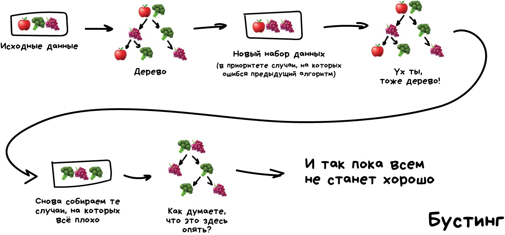
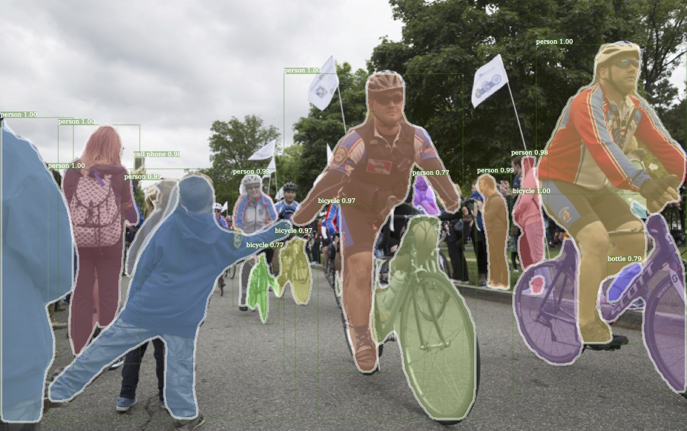

Машинное обучение — как сигареты в старших классах. Все говорят о них по углам, единицы курили, а регулярно пыхтит только трудовик. Статьи о машинном обучении делятся на два типа: это либо трёхтомники с формулами и теоремами, которые я ни разу не смог дочитать даже до середины, либо сказки об искусственном интеллекте, профессиях будущего и волшебных дата-саентистах.
Решил сам написать мини-курс, которого мне не хватало. Большое введение для тех, кто хочет наконец разобраться в машинном обучении — простым языком, без формул-теорем, зато с примерами реальных задач и их решений.
Погнали.
Зачем обучать машины
Разберёмся на Олегах.

Предположим, Олег хочет купить автомобиль и считает сколько денег ему нужно для этого накопить. Он пересмотрел десяток объявлений в интернете и увидел, что новые автомобили стоят около $20 000, годовалые — примерно $19 000, двухлетние — $18 000 и так далее.
В уме Олег-аналитик выводит формулу: адекватная цена автомобиля начинается от $20 000 и падает на $1000 каждый год, пока не упрётся в $10 000.
Олег сделал то, что в машинном обучении называют регрессией — предсказал цену по известным данным. Люди делают это постоянно, когда считают почём продать старый айфон или сколько шашлыка взять на дачу (моя формула — полкило на человека в сутки).
Да, было бы удобно иметь формулу под каждую проблему на свете. Но взять те же цены на автомобили: кроме пробега есть десятки комплектаций, разное техническое состояние, сезонность спроса и еще столько неочевидных факторов, которые Олег, даже при всём желании, не учел бы в голове.
Люди тупы и ленивы — надо заставить вкалывать роботов. Пусть машина посмотрит на наши данные, найдёт в них закономерности и научится предсказывать для нас ответ. Самое интересное, что в итоге она стала находить даже такие закономерности, о которых люди не догадывались.
Так родилось машинное обучение
Цель машинного обучения — предсказать результат по входным данным. Чем разнообразнее входные данные, тем проще машине найти закономерности и тем точнее результат.
Итак, если мы хотим обучить машину, нам нужны три вещи:
Данные Хотим определять спам — нужны примеры спам-писем, предсказывать курс акций — нужна история цен, узнать интересы пользователя — нужны его лайки или посты. Данных нужно как можно больше. Десятки тысяч примеров — это самый злой минимум для отчаянных.
Данные собирают как могут. Кто-то вручную — получается дольше, меньше, зато без ошибок. Кто-то автоматически — просто сливает машине всё, что нашлось, и верит в лучшее. Самые хитрые, типа гугла, используют своих же пользователей для бесплатной разметки. Вспомните ReCaptcha, которая иногда требует «найти на фотографии все дорожные знаки» — это оно и есть.
За хорошими наборами данных (датасетами) идёт большая охота. Крупные компании, бывает, раскрывают свои алгоритмы, но датасеты — крайне редко.
Признаки Мы называем их фичами (features), так что ненавистникам англицизмов придётся страдать. Фичи, свойства, характеристики, признаки — ими могут быть пробег автомобиля, пол пользователя, цена акций, даже счетчик частоты появления слова в тексте может быть фичей.
Машина должна знать, на что ей конкретно смотреть. Хорошо, когда данные просто лежат в табличках — названия их колонок и есть фичи. А если у нас сто гигабайт картинок с котами? Когда признаков много, модель работает медленно и неэффективно. Зачастую отбор правильных фич занимает больше времени, чем всё остальное обучение. Но бывают и обратные ситуации, когда кожаный мешок сам решает отобрать только «правильные» на его взгляд признаки и вносит в модель субъективность — она начинает дико врать.
Алгоритм Одну задачу можно решить разными методами примерно всегда. От выбора метода зависит точность, скорость работы и размер готовой модели. Но есть один нюанс: если данные фуфло, даже самый лучший алгоритм не поможет. Не зацикливайтесь на процентах, лучше соберите побольше данных.
Обучение vs Интеллект
Однажды в одном хипстерском издании я видел статью под заголовком «Заменят ли нейросети машинное обучение». Пиарщики в своих пресс-релизах обзывают «искусственным интеллектом» любую линейную регрессию, с которой уже дети во дворе играют. Объясняю разницу на картинке, раз и навсегда.
Искусственный интеллект — название всей области, как биология или химия.
Машинное обучение — это раздел искусственного интеллекта. Важный, но не единственный.
Нейросети — один из видов машинного обучения. Популярный, но есть и другие, не хуже.
Глубокое обучение — архитектура нейросетей, один из подходов к их построению и обучению. На практике сегодня мало кто отличает, где глубокие нейросети, а где не очень. Говорят название конкретной сети и всё.
Сравнивать можно только вещи одного уровня, иначе получается полный буллщит типа «что лучше: машина или колесо?» Не отождествляйте термины без причины, чтобы не выглядеть дурачком.
Карта мира машинного обучения
Лень слушать нас до конца , а телефон так и манит — повтыкайте хотя бы в картинку, будет полезно.
И да. Классифицировать алгоритмы можно десятком способов. Я выбрал этот, потому что он мне кажется самым удобным для повествования. Надо понимать, что не бывает так, чтобы задачу решал только один метод. Я буду упоминать известные примеры применений, но держите в уме, что «сын маминой подруги» всё это может решить нейросетями.
Начну с базового обзора. Сегодня в машинном обучении есть всего четыре основных направления.
Первые алгоритмы пришли к нам из чистой статистики еще в 1950-х. Они решали формальные задачи — искали закономерности в циферках, оценивали близость точек в пространстве и вычисляли направления.
Сегодня на классических алгоритмах держится добрая половина интернета. Когда вы встречаете блок «Рекомендованные статьи» на сайте, или банк блокирует все ваши деньги на карточке после первой же покупки кофе за границей — это почти всегда дело рук одного из этих алгоритмов.
Да, крупные корпорации любят решать все проблемы нейросетями. Потому что лишние 2% точности для них легко конвертируются в дополнительные 2 миллиарда прибыли. Остальным же стоит включать голову. Когда задача решаема классическими методами, дешевле реализовать сколько-нибудь полезную для бизнеса систему на них, а потом думать об улучшениях. А если вы не решили задачу, то не решить её на 2% лучше вам не особо поможет.
Знаю несколько смешных историй, когда команда три месяца переписывала систему рекомендаций интернет-магазина на более точный алгоритм, и только потом понимала, что покупатели вообще ей не пользуются. Большая часть просто приходит из поисковиков.
При всей своей популярности, классические алгоритмы настолько просты, что их легко объяснить даже ребёнку. Сегодня они как основы арифметики — пригождаются постоянно, но некоторые всё равно стали их забывать.
Классическое обучение любят делить на две категории — с учителем и без. Часто можно встретить их английские наименования — Supervised и Unsupervised Learning.
В первом случае у машины есть некий учитель, который говорит ей как правильно. Рассказывает, что на этой картинке кошка, а на этой собака. То есть учитель уже заранее разделил (разметил) все данные на кошек и собак, а машина учится на конкретных примерах.
В обучении без учителя, машине просто вываливают кучу фотографий животных на стол и говорят «разберись, кто здесь на кого похож». Данные не размечены, у машины нет учителя, и она пытается сама найти любые закономерности. Об этих методах поговорим ниже.
Очевидно, что с учителем машина обучится быстрее и точнее, потому в боевых задачах его используют намного чаще. Эти задачи делятся на два типа: классификация — предсказание категории объекта, и регрессия — предсказание места на числовой прямой.
«Разделяет объекты по заранее известному признаку. Носки по цветам, документы по языкам, музыку по жанрам»
Сегодня используют для:
Спам-фильтры
Определение языка
Поиск похожих документов
Анализ тональности
Распознавание рукописных букв и цифр
Определение подозрительных транзакций
Популярные алгоритмы: Наивный Байес, Деревья Решений, Логистическая Регрессия, K-ближайших соседей, Машины Опорных Векторов
Классификация вещей — самая популярная задача во всём машинном обучении. Машина в ней как ребёнок, который учится раскладывать игрушки: роботов в один ящик, танки в другой. Опа, а если это робот-танк? Штош, время расплакаться и выпасть в ошибку.
Для классификации всегда нужен учитель — размеченные данные с признаками и категориями, которые машина будет учиться определять по этим признакам. Дальше классифицировать можно что угодно: пользователей по интересам — так делают алгоритмические ленты, статьи по языкам и тематикам — важно для поисковиков, музыку по жанрам — вспомните плейлисты Спотифая и Яндекс.Музыки, даже письма в вашем почтовом ящике.
Раньше все спам-фильтры работали на алгоритме Наивного Байеса. Машина считала сколько раз слово «казино» встречается в спаме, а сколько раз в нормальных письмах. Перемножала эти две вероятности по формуле Байеса, складывала результаты всех слов и бац, всем лежать, у нас машинное обучение!

Позже спамеры научились обходить фильтр Байеса, просто вставляя в конец письма много слов с «хорошими» рейтингами. Метод получил ироничное название Отравление Байеса , а фильтровать спам стали другими алгоритмами. Но метод навсегда остался в учебниках как самый простой, красивый и один из первых практически полезных.
Возьмем другой пример полезной классификации. Вот берёте вы кредит в банке. Как банку удостовериться, вернёте вы его или нет? Точно никак, но у банка есть тысячи профилей других людей, которые уже брали кредит до вас. Там указан их возраст, образование, должность, уровень зарплаты и главное — кто из них вернул кредит, а с кем возникли проблемы.
Да, все догадались, где здесь данные и какой надо предсказать результат. Обучим машину, найдём закономерности, получим ответ — вопрос не в этом. Проблема в том, что банк не может слепо доверять ответу машины, без объяснений. Вдруг сбой, злые хакеры или бухой админ решил скриптик исправить.
Для этой задачи придумали Деревья Решений. Машина автоматически разделяет все данные по вопросам, ответы на которые «да» или «нет». Вопросы могут быть не совсем адекватными с точки зрения человека, например «зарплата заёмщика больше, чем 25934 рубля?», но машина придумывает их так, чтобы на каждом шаге разбиение было самым точным.
Так получается дерево вопросов. Чем выше уровень, тем более общий вопрос. Потом даже можно загнать их аналитикам, и они навыдумывают почему так.
Деревья нашли свою нишу в областях с высокой ответственностью: диагностике, медицине, финансах.
В чистом виде деревья сегодня используют редко, но вот их ансамбли (о которых будет ниже) лежат в основе крупных систем и зачастую уделывают даже нейросети. Например, когда вы задаете вопрос Яндексу, именно толпа глупых деревьев бежит ранжировать вам результаты.
Но самым популярным методом классической классификации заслуженно является Метод Опорных Векторов (SVM). Им классифицировали уже всё: виды растений, лица на фотографиях, документы по тематикам, даже странных Playboy-моделей. Много лет он был главным ответом на вопрос «какой бы мне взять классификатор».
Идея SVM по своей сути проста — он ищет, как так провести две прямые между категориями, чтобы между ними образовался наибольший зазор. На картинке видно нагляднее:
У классификации есть полезная обратная сторона — поиск аномалий. Когда какой-то признак объекта сильно не вписывается в наши классы, мы ярко подсвечиваем его на экране. Сейчас так делают в медицине: компьютер подсвечивает врачу все подозрительные области МРТ или выделяет отклонения в анализах. На биржах таким же образом определяют нестандартных игроков, которые скорее всего являются инсайдерами. Научив компьютер «как правильно», мы автоматически получаем и обратный классификатор — как неправильно.
Сегодня для классификации всё чаще используют нейросети, ведь по сути их для этого и изобрели.
Правило буравчика такое: сложнее данные — сложнее алгоритм. Для текста, цифр, табличек я бы начинал с классики. Там модели меньше, обучаются быстрее и работают понятнее. Для картинок, видео и другой непонятной бигдаты — сразу смотрел бы в сторону нейросетей.
Лет пять назад еще можно было встретить классификатор лиц на SVM, но сегодня под эту задачу сотня готовых сеток по интернету валяются, чо бы их не взять. А вот спам-фильтры как на SVM писали, так и не вижу смысла останавливаться.
«Нарисуй линию вдоль моих точек. Да, это машинное обучение»
Сегодня используют для:
Прогноз стоимости ценных бумаг
Анализ спроса, объема продаж
Медицинские диагнозы
Любые зависимости числа от времени
Популярные алгоритмы: Популярные алгоритмы: Линейная или Полиномиальная Регрессия
Регрессия — та же классификация, только вместо категории мы предсказываем число. Стоимость автомобиля по его пробегу, количество пробок по времени суток, объем спроса на товар от роста компании и.т.д. На регрессию идеально ложатся любые задачи, где есть зависимость от времени.
Регрессию очень любят финансисты и аналитики, она встроена даже в Excel. Внутри всё работает, опять же, банально: машина тупо пытается нарисовать линию, которая в среднем отражает зависимость. Правда, в отличии от человека с фломастером и вайтбордом, делает она это математически точно — считая среднее расстояние до каждой точки и пытаясь всем угодить.
Когда регрессия рисует прямую линию, её называют линейной, когда кривую — полиномиальной. Это два основных вида регрессии, дальше уже начинаются редкоземельные методы. Но так как в семье не без урода, есть Логистическая Регрессия, которая на самом деле не регрессия, а метод классификации, от чего у всех постоянно путаница. Не делайте так.
Схожесть регрессии и классификации подтверждается еще и тем, что многие классификаторы, после небольшого тюнинга, превращаются в регрессоры. Например, мы можем не просто смотреть к какому классу принадлежит объект, а запоминать, насколько он близок — и вот, у нас регрессия.
Обучение без учителя
Обучение без учителя (Unsupervised Learning) было изобретено позже, аж в 90-е, и на практике используется реже. Но бывают задачи, где у нас просто нет выбора.
Размеченные данные, как я сказал, дорогая редкость. Но что делать если я хочу, например, написать классификатор автобусов — идти на улицу руками фотографировать миллион сраных икарусов и подписывать где какой? Так и жизнь вся пройдёт, а у меня еще игры в стиме не пройдены.
Когда нет разметки, есть надежда на капитализм, социальное расслоение и миллион китайцев из сервисов типа Яндекс.Толока, которые готовы делать для вас что угодно за пять центов. Так обычно и поступают на практике. А вы думали где Яндекс берёт все свои крутые датасеты?
Либо, можно попробовать обучение без учителя. Хотя, честно говоря, из своей практики я не помню чтобы где-то оно сработало хорошо.
Обучение без учителя, всё же, чаще используют как метод анализа данных, а не как основной алгоритм. Специальный кожаный мешок с дипломом МГУ вбрасывает туда кучу мусора и наблюдает. Кластеры есть? Зависимости появились? Нет? Ну штош, продолжай, труд освобождает. Тыж хотел работать в датасаенсе.
Кластеризация
«Разделяет объекты по неизвестному признаку. Машина сама решает как лучше»
Сегодня используют для:
Сегментация рынка (типов покупателей, лояльности)
Объединение близких точек на карте
Сжатие изображений
Анализ и разметки новых данных
Детекторы аномального поведения
Популярные алгоритмы: Метод K-средних, Mean-Shift, DBSCAN
Кластеризация — это классификация, но без заранее известных классов. Она сама ищет похожие объекты и объединяет их в кластеры. Количество кластеров можно задать заранее или доверить это машине. Похожесть объектов машина определяет по тем признакам, которые мы ей разметили — у кого много схожих характеристик, тех давай в один класс.
Отличный пример кластеризации — маркеры на картах в вебе. Когда вы ищете все крафтовые бары в Москве, движку приходится группировать их в кружочки с циферкой, иначе браузер зависнет в потугах нарисовать миллион маркеров.
Более сложные примеры кластеризации можно вспомнить в приложениях iPhoto или Google Photos, которые находят лица людей на фотографиях и группируют их в альбомы. Приложение не знает как зовут ваших друзей, но может отличить их по характерным чертам лица. Типичная кластеризация.
Сжатие изображений — еще одна популярная проблема. Сохраняя картинку в PNG, вы можете установить палитру, скажем, в 32 цвета. Тогда кластеризация найдёт все «примерно красные» пиксели изображения, высчитает из них «средний красный по больнице» и заменит все красные на него. Меньше цветов — меньше файл.
Проблема только, как быть с цветами типа Cyan ◼︎ — вот он ближе к зеленому или синему? Тут нам поможет популярный алгоритм кластеризации — Метод К-средних (K-Means). Мы случайным образом бросаем на палитру цветов наши 32 точки, обзывая их центроидами. Все остальные точки относим к ближайшему центроиду от них — получаются как бы созвездия из самых близких цветов. Затем двигаем центроид в центр своего созвездия и повторяем пока центроиды не перестанут двигаться. Кластеры обнаружены, стабильны и их ровно 32 как и надо было.
Часть 2. Обучение с подкреплением
«Брось робота в лабиринт и пусть ищет выход»
Сегодня используют для:
Самоуправляемых автомобилей
Роботов пылесосов
Игр
Автоматической торговли
Управления ресурсами предприятий
Популярные алгоритмы: Q-Learning, SARSA, DQN, A3C, Генетический Алгоритм
Наконец мы дошли до вещей, которые, вроде, выглядят как настоящий искусственный интеллект. Многие авторы почему-то ставят обучение с подкреплением где-то между обучением с учителем и без, но я не понимаю чем они похожи. Названием?
Обучение с подкреплением используют там, где задачей стоит не анализ данных, а выживание в реальной среде.
Средой может быть даже видеоигра. Роботы, играющие в Марио, были популярны еще лет пять назад. Средой может быть реальный мир. Как пример — автопилот Теслы, который учится не сбивать пешеходов, или роботы-пылесосы, главная задача которых — напугать вашего кота до усрачки с максимальной эффективностью.
Знания об окружающем мире такому роботу могут быть полезны, но чисто для справки. Не важно сколько данных он соберёт, у него всё равно не получится предусмотреть все ситуации. Потому его цель — минимизировать ошибки, а не рассчитать все ходы. Робот учится выживать в пространстве с максимальной выгодой: собранными монетками в Марио, временем поездки в Тесле или количеством убитых кожаных мешков хихихих.
Выживание в среде и есть идея обучения с подкреплением. Давайте бросим бедного робота в реальную жизнь, будем штрафовать его за ошибки и награждать за правильные поступки. На людях норм работает, почему бы на и роботах не попробовать.
Умные модели роботов-пылесосов и самоуправляемые автомобили обучаются именно так: им создают виртуальный город (часто на основе карт настоящих городов), населяют случайными пешеходами и отправляют учиться никого там не убивать. Когда робот начинает хорошо себя чувствовать в искусственном GTA, его выпускают тестировать на реальные улицы.
Запоминать сам город машине не нужно — такой подход называется Model-Free. Конечно, тут есть и классический Model-Based, но в нём нашей машине пришлось бы запоминать модель всей планеты, всех возможных ситуаций на всех перекрёстках мира. Такое просто не работает. В обучении с подкреплением машина не запоминает каждое движение, а пытается обобщить ситуации, чтобы выходить из них с максимальной выгодой.
Помните новость пару лет назад, когда машина обыграла человека в Го? Хотя незадолго до этого было доказано, что число комбинаций физически невозможно просчитать, ведь оно превышает количество атомов во вселенной. То есть если в шахматах машина реально просчитывала все будущие комбинации и побеждала, с Го так не прокатывало. Поэтому она просто выбирала наилучший выход из каждой ситуации и делала это достаточно точно, чтобы обыграть кожаного мешка.
Эта идея лежит в основе алгоритма Q-learning и его производных (SARSA и DQN). Буква Q в названии означает слово Quality, то есть робот учится поступать наиболее качественно в любой ситуации, а все ситуации он запоминает как простой марковский процесс.
Машина прогоняет миллионы симуляций в среде, запоминая все сложившиеся ситуации и выходы из них, которые принесли максимальное вознаграждение. Но как понять, когда у нас сложилась известная ситуация, а когда абсолютно новая? Вот самоуправляемый автомобиль стоит у перекрестка и загорается зелёный — значит можно ехать? А если справа мчит скорая помощь с мигалками?
Ответ — фиг знает, никак, магии не бывает, исследователи постоянно этим занимаются, изобретая свои костыли. Одни прописывают все ситуации руками, что позволяет им обрабатывать исключительные случаи типа проблемы вагонетки. Другие идут глубже и отдают эту работу нейросетям, пусть сами всё найдут. Так вместо Q-learning'а у нас появляется Deep Q-Network (DQN).
Reinforcement Learning для простого обывателя выглядит как настоящий интеллект. Потому что ух ты, машина сама принимает решения в реальных ситуациях! Он сейчас на хайпе, быстро прёт вперёд и активно пытается в нейросети, чтобы стать еще точнее (а не стукаться о ножку стула по двадцать раз).
Потому если вы любите наблюдать результаты своих трудов и хотите популярности — смело прыгайте в методы обучения с подкреплением (до чего ужасный русский термин, каждый раз передёргивает) и заводите канал на ютюбе! Даже я бы смотрел.
Часть 3. Ансамбли
«Куча глупых деревьев учится исправлять ошибки друг друга»
Сегодня используют для:
Всего, где подходят классические алгоритмы (но работают точнее)
Поисковые системы (★)
Компьютерное зрение
Распознавание объектов
Популярные алгоритмы: Random Forest, Gradient Boosting
Теперь к настоящим взрослым методам. Ансамбли и нейросети — наши главные бойцы на пути к неминуемой сингулярности. Сегодня они дают самые точные результаты и используются всеми крупными компаниями в продакшене. Только о нейросетях трещат на каждом углу, а слова «бустинг» и «бэггинг», наверное, пугают только хипстеров с теккранча.
При всей их эффективности, идея до издевательства проста. Оказывается, если взять несколько не очень эффективных методов обучения и обучить исправлять ошибки друг друга, качество такой системы будет аж сильно выше, чем каждого из методов по отдельности.
Причём даже лучше, когда взятые алгоритмы максимально нестабильны и сильно плавают от входных данных. Поэтому чаще берут Регрессию и Деревья Решений, которым достаточно одной сильной аномалии в данных, чтобы поехала вся модель. А вот Байеса и K-NN не берут никогда — они хоть и тупые, но очень стабильные.
Ансамбль можно собрать как угодно, хоть случайно нарезать в тазик классификаторы и залить регрессией. За точность, правда, тогда никто не ручается. Потому есть три проверенных способа делать ансамбли.
Стекинг Обучаем несколько разных алгоритмов и передаём их результаты на вход последнему, который принимает итоговое решение. Типа как девочки сначала опрашивают всех своих подружек, чтобы принять решение встречаться с парнем или нет.
Ключевое слово — разных алгоритмов, ведь один и тот же алгоритм, обученный на одних и тех же данных не имеет смысла. Каких — ваше дело, разве что в качестве решающего алгоритма чаще берут регрессию.
Чисто из опыта — стекинг на практике применяется редко, потому что два других метода обычно точнее.
Беггинг Он же Bootstrap AGGregatING. Обучаем один алгоритм много раз на случайных выборках из исходных данных. В самом конце усредняем ответы.
Данные в случайных выборках могут повторяться. То есть из набора 1-2-3 мы можем делать выборки 2-2-3, 1-2-2, 3-1-2 и так пока не надоест. На них мы обучаем один и тот же алгоритм несколько раз, а в конце вычисляем ответ простым голосованием.
Самый популярный пример беггинга — алгоритм Random Forest, беггинг на деревьях, который и нарисован на картинке. Когда вы открываете камеру на телефоне и видите как она очертила лица людей в кадре желтыми прямоугольниками — скорее всего это их работа. Нейросеть будет слишком медлительна в реальном времени, а беггинг идеален, ведь он может считать свои деревья параллельно на всех шейдерах видеокарты.
Дикая способность параллелиться даёт беггингу преимущество даже над следующим методом, который работает точнее, но только в один поток. Хотя можно разбить на сегменты, запустить несколько... ах кого я учу, сами не маленькие.
Бустинг Обучаем алгоритмы последовательно, каждый следующий уделяет особое внимание тем случаям, на которых ошибся предыдущий.
Как в беггинге, мы делаем выборки из исходных данных, но теперь не совсем случайно. В каждую новую выборку мы берём часть тех данных, на которых предыдущий алгоритм отработал неправильно. То есть как бы доучиваем новый алгоритм на ошибках предыдущего.
Плюсы — неистовая, даже нелегальная в некоторых странах, точность классификации, которой позавидуют все бабушки у подъезда. Минусы уже названы — не параллелится. Хотя всё равно работает быстрее нейросетей, которые как гружёные камазы с песком по сравнению с шустрым бустингом.
Нужен реальный пример работы бустинга — откройте Яндекс и введите запрос. Слышите, как Матрикснет грохочет деревьями и ранжирует вам результаты? Вот это как раз оно, Яндекс сейчас весь на бустинге. Про Google не знаю.
«У нас есть сеть из тысячи слоёв, десятки видеокарт, но мы всё еще не придумали где это может быть полезно. Пусть рисует котиков!»
Сегодня используют для:
Вместо всех вышеперечисленных алгоритмов вообще
Определение объектов на фото и видео
Распознавание и синтез речи
Обработка изображений, перенос стиля
Машинный перевод
Популярные архитектуры: Перцептрон, Свёрточные Сети (CNN), Рекуррентные Сети (RNN), Автоэнкодеры
Если вам хоть раз не пытались объяснить нейросеть на примере якобы работы мозга, расскажите, как вам удалось спрятаться? Я буду избегать этих аналогий и объясню как нравится мне.
Любая нейросеть — это набор нейронов и связей между ними. Нейрон лучше всего представлять просто как функцию с кучей входов и одним выходом. Задача нейрона — взять числа со своих входов, выполнить над ними функцию и отдать результат на выход. Простой пример полезного нейрона: просуммировать все цифры со входов, и если их сумма больше N — выдать на выход единицу, иначе — ноль.
Связи — это каналы, через которые нейроны шлют друг другу циферки. У каждой связи есть свой вес — её единственный параметр, который можно условно представить как прочность связи. Когда через связь с весом 0.5 проходит число 10, оно превращается в 5. Сам нейрон не разбирается, что к нему пришло и суммирует всё подряд — вот веса и нужны, чтобы управлять на какие входы нейрон должен реагировать, а на какие нет.
Чтобы сеть не превратилась в анархию, нейроны решили связывать не как захочется, а по слоям. Внутри одного слоя нейроны никак не связаны, но соединены с нейронами следующего и предыдущего слоя. Данные в такой сети идут строго в одном направлении — от входов первого слоя к выходам последнего.
Если нафигачить достаточное количество слоёв и правильно расставить веса в такой сети, получается следующее — подав на вход, скажем, изображение написанной от руки цифры 4, чёрные пиксели активируют связанные с ними нейроны, те активируют следующие слои, и так далее и далее, пока в итоге не загорится самый выход, отвечающий за четвёрку. Результат достигнут.
В реальном программировании, естественно, никаких нейронов и связей не пишут, всё представляют матрицами и считают матричными произведениями, потому что нужна скорость.
Когда мы построили сеть, наша задача правильно расставить веса, чтобы нейроны реагировали на нужные сигналы. Тут нужно вспомнить, что у нас же есть данные — примеры «входов» и правильных «выходов». Будем показывать нейросети рисунок той же цифры 4 и говорить «подстрой свои веса так, чтобы на твоём выходе при таком входе всегда загоралась четвёрка».
Сначала все веса просто расставлены случайно, мы показываем сети цифру, она выдаёт какой-то случайный ответ (весов-то нет), а мы сравниваем, насколько результат отличается от нужного нам. Затем идём по сети в обратном направлении, от выходов ко входам, и говорим каждому нейрону — так, ты вот тут зачем-то активировался, из-за тебя всё пошло не так, давай ты будешь чуть меньше реагировать на вот эту связь и чуть больше на вон ту, ок?
Через тысяч сто таких циклов «прогнали-проверили-наказали» есть надежда, что веса в сети откорректируются так, как мы хотели. Научно этот подход называется Backpropagation или «Метод обратного распространения ошибки». Забавно то, что чтобы открыть этот метод понадобилось двадцать лет. До него нейросети обучали как могли.
Оказалось, что на обучение сети с большим количеством слоёв требовались невозможные по тем временам мощности. Сейчас любое игровое ведро с жифорсами превышает мощность тогдашнего датацентра. Тогда даже надежды на это не было, и в нейросетях все сильно разочаровались.
Пока лет десять назад не бомбанул диплёрнинг.
В 2012 году свёрточная нейросеть порвала всех в конкурсе ImageNet, из-за чего в мире внезапно вспомнили о методах глубокого обучения, описанных еще в 90-х годах. Теперь-то у нас есть видеокарты!
Отличие глубокого обучения от классических нейросетей было в новых методах обучения, которые справлялись с большими размерами сетей. Однако сегодня лишь теоретики разделяют, какое обучение можно считать глубоким, а какое не очень. Мы же, как практики, используем популярные «глубокие» библиотеки типа Keras, TensorFlow и PyTorch даже когда нам надо собрать мини-сетку на пять слоёв. Просто потому что они удобнее всего того, что было раньше. Мы называем это просто нейросетями.
Расскажу об одной из главных на сегодняшний момент.
Свёрточные Нейросети (CNN)
Свёрточные сети сейчас на пике популярности. Они используются для поиска объектов на фото и видео, распознавания лиц, переноса стиля, генерации и дорисовки изображений, создания эффектов типа слоу-мо и улучшения качества фотографий. Сегодня CNN применяют везде, где есть картинки или видео. Даже в вашем айфоне несколько таких сетей смотрят на ваши обнаженные фотографии, чтобы распознать объекты на них. Если там, конечно, есть что распознавать *сердечко* .
Картинка выше — результат работы библиотеки Detectron, которую Facebook недавно заопенсорсил Проблема с изображениями всегда была в том, что непонятно, как выделять на них признаки. Текст можно разбить по предложениям, взять свойства слов из словарей. Картинки же приходилось размечать руками, объясняя машине, где у котика на фотографии ушки, а где хвост. Такой подход даже назвали «handcrafting признаков» и раньше все так и делали. Проблем у ручного крафтинга много. Во-первых, если котик на фотографии прижал ушки или отвернулся — всё, нейросеть ничего не увидит. Во-вторых, попробуйте сами сейчас назвать хотя бы десять характерных признаков, отличающих котиков от других животных. Я вот не смог. Однако когда ночью мимо меня пробегает чёрное пятно, даже краем глаза я могу сказать котик это или крыса. Потому что человек не смотрит только на форму ушей и количество лап — он оценивает объект по куче разных признаков, о которых сам даже не задумывается. А значит, не понимает и не может объяснить машине. Получается, машине надо самой учиться искать эти признаки, составляя из каких-то базовых линий. Будем делать так: для начала ра��делим изображение на блоки 8x8 пикселей и выберем какая линия доминирует в каждом — горизонтальная [-], вертикальная [|] или одна из диагональных [/]. Могут и две, и три, так тоже бывает, мы не всегда точно уверены. На выходе мы получим несколько массивов палочек, которые по сути являются простейшими признаками наличия очертаний объектов на картинке. По сути это тоже картинки, просто из палочек. Значит мы можем вновь выбрать блок 8x8 и посмотреть уже, как эти палочки сочетаются друг с другом. А потом еще и еще. Такая операция называется свёрткой, откуда и пошло название метода. Свёртку можно представить как слой нейросети, ведь нейрон — абсолютно любая функция. Когда мы прогоняем через нашу нейросеть кучу фотографий котов, она автоматически расставляет большие веса тем сочетаниям из палочек, которые увидела чаще всего. Причём неважно, это прямая линия спины или сложный геометрический объект типа мордочки — что-то обязательно будет ярко активироваться. На выходе же мы поставим простой перцептрон, который будет смотреть какие сочетания активировались и говорить кому они больше характерны — кошке или собаке. Красота идеи в том, что у нас получилась нейросеть, которая сама находит характерные признаки объектов. Нам больше не надо отбирать их руками. Мы можем сколько угодно кормить её изображениями любых объектов, просто нагуглив миллион картинок с ними — сеть сама составит карты признаков из палочек и научится определять что угодно. По этому поводу у меня даже есть несмешная шутка: Дай нейросети рыбу — она сможет определять рыбу до конца жизни. Дай нейросети удочку — она сможет определять и удочку до конца жизни... На вопрос «когда машины станут умнее нас и всех поработят?» я всегда отвечаю, что он заранее неправильный. В нём слишком много скрытых условий, который примаются как как данность. Вот мы говорим «станут умнее нас». Значит мы подразумеваем, что существует некая единая шкала интеллекта, наверху которой находится человек, собаки пониже, а глупые голуби тусят в самом низу. Получается человек должен превосходить нижестоящих животных во всём, так? А в жизни не так. Средняя белка может помнить тысячу тайников в орешками, а я не могу вспомнить где ключи. Получается интеллект — это набор разных навыков, а не единая измеримая величина? Или просто запоминание орешков в него не входит? А убивание человеков входит? Ну и самый интересный для меня вопрос — почему мы заранее считаем, что возможности человеческого мозга ограничены? В интернетах обожают рисовать графики, на которых технологический прогресс обозначен экспонентой, а возможности кожаных мешков константой. Но так ли это? Вот давайте, прямо сейчас в уме умножьте 1680 на 950. Да, знаю, вы даже пытаться не станете. Но дай вам калькулятор, это займёт две секунды. Значит ли это, что вы только что расширили возможности своего мозга с помощью калькулятора? Можно ли продолжать их расширять другими машинами? Я вот использую заметки на телефоне — значит ли это, что я расширяю свою память с помощью машины? Получается, мы уже успешно расширяем способности нашего мозга с помощью машин. Или нет? Подумайте. Мы всеЗаключение: когда на войну с машинами?